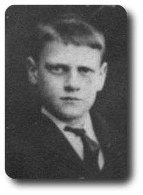
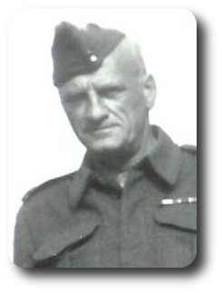
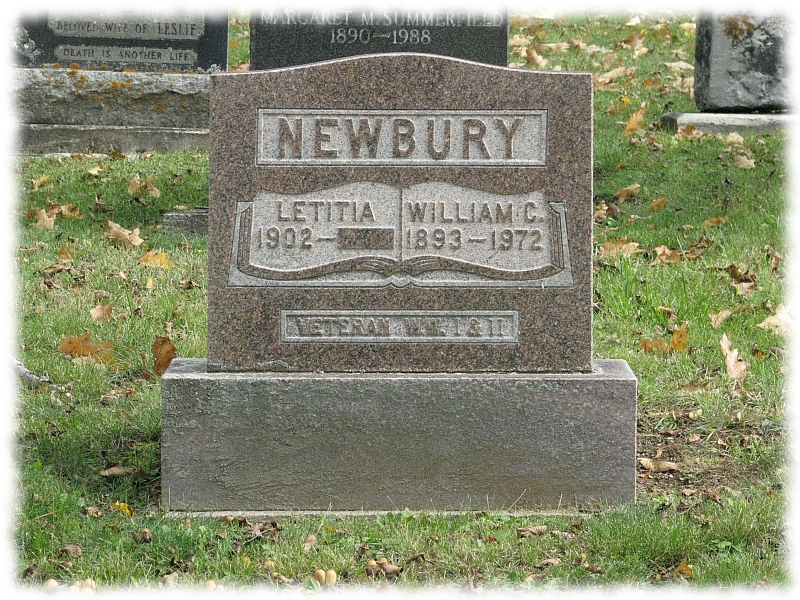

William Charles Newbury ( 1893 - 1972 )  emigrated to Canada -->> 1908.04.02 (14)
emigrated to Canada -->> 1908.04.02 (14) 
Son of George William Newbury (born in 1859 in Sundon, Bedfordshire) and Caroline Bester (born in 1865 in Little Eversden, Cambridge) who were married in 1887 in Edmonton, Middlesex.

1893.08.28 b. ( unconfirmed: Dec 1893, Edmonton, v.3a, pg.[32]88 ) Aug.28 is from attestation papers
1897.09.07 This was a big day, Elizabeth, Millie, Bill and Annie were all baptised at Tottenham in All Hallows on this Tuesday.
| 1897. Baptisms solemnized in the Parish of Tottenham in the County of Middlesex in the year 1897. |
| When Baptised |
Child's Christian Name |
Parents Name |
Abode |
Profession |
| 1897 Septr 7 |
William Charles |
George William & Caroline |
8 Prospect Place, Church Row |
Grave digger |
1901.03.31 William was living in Tottenham, Middlesex, England at 8 Prospect Place
| 1901 UK Census, Civil Parish of Tottenham, Ecclesiastical Parish of All Hallows (part of) |
| Residence: 8 Prospect Place, Tottenham, Middlesex |
| Last names |
First names |
Relation to Head |
Condition as to Marriage |
Age on Last Birthday |
Occupation |
Where Born |
| NEWBURY |
GEORGE |
Head |
M |
42 |
Labourer |
Beds Bedford |
| NEWBURY |
CAROLINE |
Wife |
M |
37 |
-- |
E Cambridge |
| NEWBURY |
ELIZABETH |
Daur |
-- |
13 |
-- |
Middx Edmonton |
| NEWBURY |
MILLICENT |
Daur |
-- |
10 |
-- |
Middx Edmonton |
| NEWBURY |
WILLIAM |
Son |
-- |
7 |
-- |
Middx Edmonton |
| NEWBURY |
ANNIE |
Daur |
-- |
5 |
-- |
Middx Edmonton |
| NEWBURY |
GEORGE |
Son |
-- |
10 m. |
-- |
Middx Edmonton |
1904.10.21 William's father George William Newbury dies in England
1905 William's sister Elizabeth Newbury, age 17, marries Harry Allinson in Edmonton, Middlesex, England
1908.04.02 William emigrates to Canada
| 1908.04.02 Sailed from Liverpool, England on the S.S. Canada (stopped in Halifax, Nova Scotia) |
| 1908.04.11 Arrived in Portland, Maine, U.S.A. |
| Amt of Cash |
Name of Passenger |
Age |
Able to Read |
Able to Write |
Married or Single |
Occupation |
Country of Birth |
Destination |
| $40.00 |
Newbury, Caroline |
43 |
Y |
Y |
W |
To Sister to be a domestic |
English |
Orillia |
| -- |
Newbury, William |
14 |
Y |
Y |
S |
Child |
English |
Orillia |
| -- |
Newbury, Annie |
12 |
Y |
Y |
S |
Child |
English |
Orillia |
| -- |
Newbury, Thomas |
7 |
Y |
Y |
S |
Child |
English |
Orillia |
| Above from Library and Archives Canada, Reference: RG 76, Microfilm: T-4689: ship's passenger list, pg.15 |
| From List or Manifest of Alien Passengers for the United States Immigration Officer at Port of Arrival: |
Nearest Relative or Friend in Country Whence Alien Came: daughter Mrs. Allinson, Boundary Rd., Harwich, Essex
Joining a Relative or Friend?: Mrs. Perrin, 31 King St., Orillia, Ont. |
1909.09.09 William's sister Millicent Newbury emigrated to Canada
1911.04.18 William's sister Elizabeth dies in Orillia, her baby survies
1911 William was living in Dover Township, Ontario, Canada (labourer)
1912.07.18 William's sister Annie Newbury marries Frederick Bingley in Toronto, Ontario, Canada
1912.11.11 William's mother Caroline (Bester) Newbury, age 47, marries Coleman Armstrong in Orillia, Ontario, Canada
1914.09.11 William's sister Millie Newbury, age 24, marries Herbert Cameron in Orillia, Ontario, Canada
1914.09.22 William enlisted, 21 years old. Joined Canadian Expeditionary Forces. Name: William Charles Newberry; Born: Edmonton, Eng.; Next of Kin: Mrs. Caroline Newberry of Front St., Orillia, Ont. Can.; Date of Birth: Aug 28/1893; Trade: Painter; Married: No; Description: Apparent Age 21 years ?? months; Height: 5'9", Girth when fully expanded: 37 ins; Range of expansion: 2 ins; Complexion: fair; Eyes: blue; Hair: brown; Distinctive marks: 2 vacs left arm, tattoos on both arms. Signed by William Sept. 22nd, 1914; signed by the Medical Officer in Valcartier on Sept.2, 1914; signed by Magistrate at Valcartier the 22 day of Sept. 1914.
1919.07.19 (26) William was married in Toronto, Ontario, Canada Affidavit says: Intended place of Marriage: City of Toronto, County of York; Bridegroom: William Charles Newbury, age 24, 311 Euclide Ave, City of Toronto; Born: England; Bachelor; Painter; Anglican; Father: George Newbury; Mother Caroline Bester; Bride: Letitia Ethel Reber, age 18, 54 Bond St., City of Toronto; Born: New Carlow, Ont; Spinster; Anglican; Father: Edward Reber; Mother: Elizabeth Kries. Wittnesses: not very clear - Ethel Brener, ??? John St and J. K. Marsh, 344 ???. to:
Letitia (Tish) Ethel Reber
Her parents Edward "Ned" Reber, d. 1938 and Elizabeth (Lizzie) Hannah Krier, d. 1965 are buried in New Carlow Cemetery, Carlow Township, North Hastings County Ontario. Lot 5, Concession 12.
1902.06.13 Letitia was born in Hastings County, Ontario, Canada
1911.06.01 census: living in Carlow, Ontario, Canada, Lot 4, Con. 10
| 1911 CAN Census, District: Hastings East 79, Sub-District: Carlow 1 |
| Residence: Lot 4, Con. 10, Carlow, Ontario |
| Name of each person |
Relation to Head |
Single, Married ... |
Month of birth |
Year of birth |
Age on last birthday |
Place of birth |
Year of naturalization |
Racial origin |
Religion |
Occupation |
Where Employed |
| REBER ELIZABETH |
Head |
M |
Feb |
1885 |
26 |
Ontario |
-- |
German |
Anglican |
Farmer |
-- |
| REBER LETITIA |
Daughter |
S |
June |
1902 |
8 |
Ontario |
-- |
Swiss |
Anglican |
-- |
-- |
| REBER JAMES |
Son |
S |
Jan |
1910 |
1 |
Ontario |
-- |
Swiss |
Anglican |
-- |
-- |
| From Library and Archives Canada. Ontario |
| Reference: RG31, Statistics Canada, Microfilm Reel Number: T-20376 [census pg.14] |
1921.09.22 William's brother Thomas Newbury, age 21, marries Alice Latham in Toronto, Ontario, Canada
1930.04.01 census: living in Genesse, Michigan, USA at 925 Harrison St. (painter) ( living with Letitia (28); rent: $20/month; Letitia's father was born in Switzerland; Year of Immigration to US: William (1923), Letitia (1924) )
1936.06.02 William's mother Caroline, age 70, dies in Orillia, Ontario, Canada
1948.08 William's brother Thomas, age 47, dies in Bath, Ontario, Canada
1972 William died somewhere in Ontario, Canada
1972 William is buried in St. John's Anglican Cemetery on Highway 62 just north of Bancroft, Ontario, Canada.

St. John's Anglican Cemetery on Highway 62 just north of Bancroft, Ontario, Canada